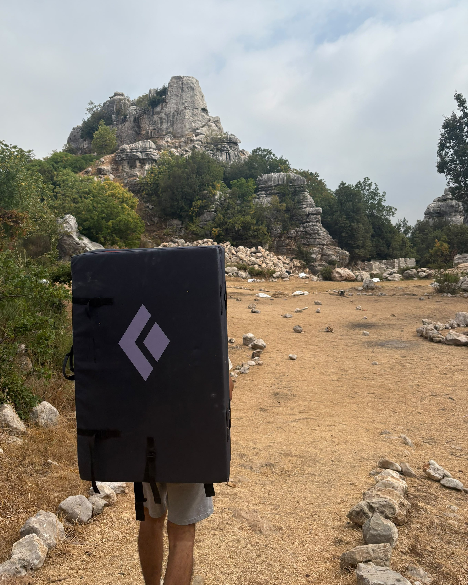

02
Where I
studied.
2023–28
American University of Beirut
degrees
B.E. Computer Science & Engineering · B.S. Mathematics
before
College Notre Dame de Jamhour
Beirut, Lebanon · 2026
I spend most of my time thinking about math and computer science, and I am always happy to yap about either. When I am not working, I am usually climbing or tilting on Chess.com (I promise I am much better over the board).
selected work ↓01
Research, code, and a few coordinates for people in a hurry.
featured research · 2026
Hardness of approximation for minimum-weight decoding of two-dimensional topological quantum codes.
Read the preprint note ↗currently
After an independent reading course grounded in self-study, I am now working with Professor Scott Duke Kominers on fairness constraints and dynamic compatibility structures.
02
American University of Beirut
B.E. Computer Science & Engineering · B.S. Mathematics
College Notre Dame de Jamhour
03
AI Engineer · Procomix Technology Group
Undergraduate Research Assistant with Professor Louay Bazzi, Quantum Error Correction · AUB
Quantitative Research & Engineering Intern · Edgebot
Algorithms TA · mathematics tutor
04
Muhanna Foundation in Mathematics Award of Excellence
1st Place, Lebanese Collegiate Programming Competition
AUB Presidential Scholarship
05
Chess, climbing, and other silly stuff I do outside of work. Proof that I do, sometimes, close the laptop.

climbing
Lead or bouldering: if there is rock, a rope, or a crash pad involved, I’m in.
chess / the dragon
1. e4 c5
good stuff
06
Research, programming, climbing, chess positions, or whatever else seems worth a message.